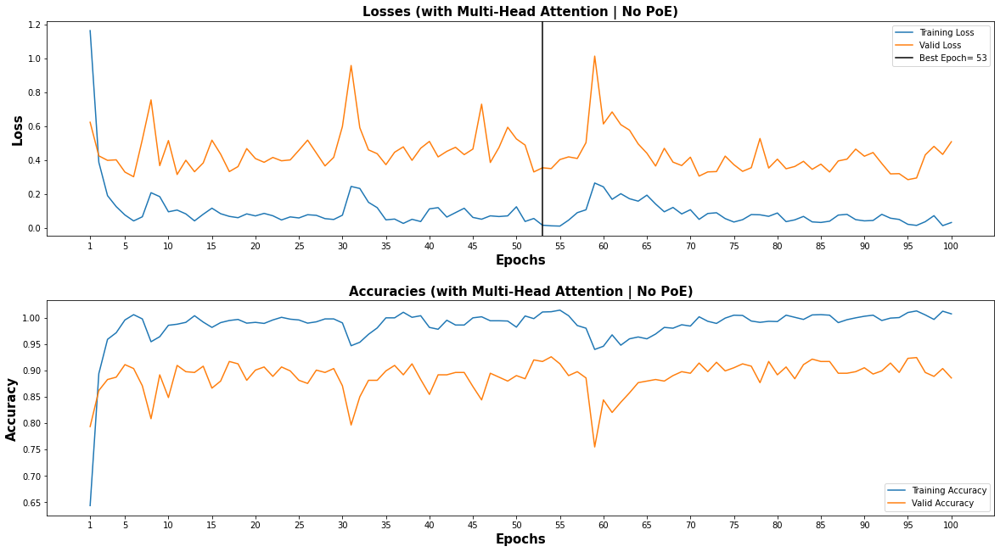

Transformers
Contents
Transformers#
Overview#
This notebook implements Transformer model for HCP (movie watching) data
Transformers were first present by Vaswani, et al. in their paper Attention Is All You Need.
Data Organization#
Same as in the gru + attention notebook
import torch
import pickle
import numpy as np
import torch.nn as nn
with open('Data/HCP_movie_watching.pkl','rb') as f:
TS = pickle.load(f)
print(TS.keys())
dict_keys(['testretest', 'twomen', 'bridgeville', 'pockets', 'overcome', 'inception', 'socialnet', 'oceans', 'flower', 'hotel', 'garden', 'dreary', 'homealone', 'brokovich', 'starwars'])
rel = {}
l = 0
for movie_name, ts in TS.items():
rel[movie_name] = l
l += 1
print(movie_name, ts.shape)
testretest (4, 176, 84, 300)
twomen (176, 245, 300)
bridgeville (176, 222, 300)
pockets (176, 189, 300)
overcome (176, 65, 300)
inception (176, 227, 300)
socialnet (176, 260, 300)
oceans (176, 250, 300)
flower (176, 181, 300)
hotel (176, 186, 300)
garden (176, 205, 300)
dreary (176, 143, 300)
homealone (176, 233, 300)
brokovich (176, 231, 300)
starwars (176, 256, 300)
train_feature = []
test_feature = []
train_target = []
test_target = []
seq_length = 198
for movie_name, ts in TS.items():
pep = 0
if movie_name != "testretest":
for i in ts:
pep += 1
if (pep <= 100):
if i.shape[0]>seq_length:
k = i[:seq_length][:]
train_feature.append(k)
train_target.append(rel[movie_name])
k = i[i.shape[0]-seq_length:][:]
train_feature.append(k)
train_target.append(rel[movie_name])
elif i.shape[0]<seq_length:
k = [[0]*300]*seq_length
k[seq_length-i.shape[0]:] = i
train_feature.append(k)
train_target.append(rel[movie_name])
else:
train_feature.append(i)
train_target.append(rel[movie_name])
else:
if i.shape[0]>seq_length:
k = i[:seq_length][:]
test_feature.append(k)
test_target.append(rel[movie_name])
k = i[i.shape[0]-seq_length:][:]
test_feature.append(k)
test_target.append(rel[movie_name])
elif i.shape[0]<seq_length:
k = [[0]*300]*seq_length
k[seq_length-i.shape[0]:] = i
test_feature.append(k)
test_target.append(rel[movie_name])
else:
test_feature.append(i)
test_target.append(rel[movie_name])
print(pep)
else:
for jj in ts:
pep = 0
for i in jj:
pep += 1
if (pep <= 101):
if i.shape[0]>seq_length:
k = i[:seq_length][:]
train_feature.append(k)
train_target.append(rel[movie_name])
k = i[i.shape[0]-seq_length:][:]
train_feature.append(k)
train_target.append(rel[movie_name])
elif i.shape[0]<seq_length:
k = [[0]*300]*seq_length
k[seq_length-i.shape[0]:] = i
train_feature.append(k)
train_target.append(rel[movie_name])
else:
train_feature.append(i)
train_target.append(rel[movie_name])
else:
if i.shape[0]>seq_length:
k = i[:seq_length][:]
test_feature.append(k)
test_target.append(rel[movie_name])
k = i[i.shape[0]-seq_length:][:]
test_feature.append(k)
test_target.append(rel[movie_name])
elif i.shape[0]<seq_length:
k = [[0]*300]*seq_length
k[seq_length-i.shape[0]:] = i
test_feature.append(k)
test_target.append(rel[movie_name])
else:
test_feature.append(i)
test_target.append(rel[movie_name])
print(pep)
176
176
176
176
176
176
176
176
176
176
176
176
176
176
176
176
176
176
from torch.utils.data import TensorDataset, DataLoader
train_data = TensorDataset(torch.from_numpy(np.array(train_feature)).float(),torch.from_numpy(np.array(train_target)).float())
test_data = TensorDataset(torch.from_numpy(np.array(test_feature)).float(),torch.from_numpy(np.array(test_target)).float())
from torch.utils.data.sampler import SubsetRandomSampler
batch_size = 32
valid_data = 0.25
t_train = len(train_data)
data_no = list(range(t_train))
np.random.shuffle(data_no)
split_no = int(np.ceil(valid_data*t_train))
train,valid = data_no[split_no:],data_no[:split_no]
train_sampler = SubsetRandomSampler(train)
valid_sampler = SubsetRandomSampler(valid)
train_loader = DataLoader(train_data,batch_size=batch_size,sampler=train_sampler,drop_last=True)
valid_loader = DataLoader(train_data,sampler=valid_sampler,batch_size=batch_size,drop_last=True)
test_loader = DataLoader(test_data, batch_size=batch_size,shuffle = True)
is_cuda = torch.cuda.is_available()
if is_cuda:
device = torch.device("cuda")
else:
device = torch.device("cpu")
device
device(type='cuda')
Modelling#
Positional Encodings#

class PositionalEncoding(nn.Module):
def __init__(self,d_model,seq_len):
"""
Args:
seq_len: length of input sequence
d_model: demension of encoding
"""
super(PositionalEncoding, self).__init__()
self.d_model = d_model
self.seq_len = seq_len
pe = torch.zeros(seq_len,self.d_model)
for pos in range(seq_len):
for i in range(0,self.d_model,2):
pe[pos, i] = torch.sin(pos / (10000 ** ((2 * i)/self.d_model)))
pe[pos, i + 1] = torch.cos(pos / (10000 ** ((2 * (i + 1))/self.d_model)))
pe = pe.unsqueeze(0)
self.register_buffer('pe', pe)
def forward(self, x):
x = x + torch.autograd.Variable(self.pe[:,:self.seq_len], requires_grad=False)
return x
Self Attention#

class Attention(nn.Module):
"""
q : current sequence
k : every sequence to check relationship with Qeury
v : every seq same with Key
"""
def __init__(self):
super(Attention, self).__init__()
self.softmax = nn.Softmax(dim=-1)
def forward(self, q, k, v): # [batch_size, head, length, d_tensor]
batch_size, head, length, d_tensor = k.size()
# 1. dot product Query with Key^T to compute similarity
k_t = k.transpose(2, 3)
score = (q @ k_t) / np.sqrt(d_tensor) # scaled dot product
# 2. Masking (opt)
# 3. Softmax
score = self.softmax(score)
# 4. multiply with Value
v = score @ v
return v, score
Multi Head Attention#

class MultiHeadAttention(nn.Module):
def __init__(self, d_model, n_head):
super(MultiHeadAttention, self).__init__()
self.n_head = n_head
self.attention = Attention()
self.w_q = nn.Linear(d_model, d_model)
self.w_k = nn.Linear(d_model, d_model)
self.w_v = nn.Linear(d_model, d_model)
self.w_concat = nn.Linear(d_model, d_model)
def forward(self, q, k, v):
# 1. dot product with weight matrices
q, k, v = self.w_q(q), self.w_k(k), self.w_v(v)
# 2. split tensor by number of heads
q, k, v = self.split(q), self.split(k), self.split(v)
# 3. do scale dot product to compute similarity
out, attention = self.attention(q, k, v)#, mask=mask)
# 4. concat and pass to linear layer
out = self.concat(out)
out = self.w_concat(out)
# visualize attention map => may implement visualization
return out
def split(self, tensor):
"""
split tensor by number of head
:param tensor: [batch_size, length, d_model]
:return: [batch_size, head, length, d_tensor]
"""
batch_size, length, d_model = tensor.size()
d_tensor = d_model // self.n_head
tensor = tensor.view(batch_size, length, self.n_head, d_tensor).transpose(1, 2)
return tensor
def concat(self, tensor):
"""
:param tensor: [batch_size, head, length, d_tensor]
:return: [batch_size, length, d_model]
"""
batch_size, head, length, d_tensor = tensor.size()
d_model = head * d_tensor
tensor = tensor.transpose(1, 2).contiguous().view(batch_size, length, d_model)
return tensor
Feed Forward#
class FeedForward(nn.Module):
def __init__(self, d_model, feed_fwd, dropout = 0.1):
super().__init__()
self.l1 = nn.Linear(d_model, feed_fwd)
self.l2 = nn.Linear(feed_fwd, d_model)
self.dropout = nn.Dropout(p=dropout)
self.relu = nn.ReLU()
def forward(self, x):
x = self.dropout(self.relu(self.l1(x)))
x = self.l2(x)
return x
Transformer Block#
class TransformerBlock(nn.Module):
def __init__(self, d_model,feed_fwd ,n_heads,drop_prob):
super(TransformerBlock, self).__init__()
"""
Args:
embed_dim: dimension of the embedding
n_heads: number of attention heads
"""
self.attention = MultiHeadAttention(d_model=d_model, n_head=n_head)
self.norm1 = nn.LayerNorm(d_model)
self.norm2 = nn.LayerNorm(d_model)
self.feed_fwd = FeedForward(d_model=d_model, feed_fwd=feed_fwd, dropout=drop_prob)
self.dropout1 = nn.Dropout(p=drop_prob)
self.dropout2 = nn.Dropout(p=drop_prob)
def forward(self,x):#key,query,value):
"""
Args:
key: key vector
query: query vector
value: value vector
"""
# 1. compute self attention
_x = x
#print(x.shape)
x = self.attention(q=x, k=x, v=x)
# 2. add and norm
x = self.norm1(x + _x)
x = self.dropout1(x)
# 3. feed forward network
_x = x
x = self.feed_fwd(x)
# 4. add and norm
x = self.norm2(x + _x)
x = self.dropout2(x)
return x
Complied Model (No PoE)#
class Transformer_Model(nn.Module):
def __init__(self, d_model, feed_fwd, out_dim, n_layers, n_head, drop_prob):
super(Transformer_Model, self).__init__()
self.layers = nn.ModuleList([TransformerBlock(d_model, feed_fwd, n_head, drop_prob) for i in range(n_layers)])
self.linear_out = nn.Linear(d_model,out_dim)
def forward(self, x):
for layer in self.layers:
x = layer(x)
x = self.linear_out(x)
return x
Complied Model (with PoE)#
class Transformer_Model_PoE(nn.Module):
def __init__(self, d_model, feed_fwd, out_dim, n_layers, n_head, drop_prob):
super(Transformer_Model_PoE, self).__init__()
self.po_en = PositionalEncoding(d_model,seq_len=198)
self.layers = nn.ModuleList([TransformerBlock(d_model, feed_fwd, n_head, drop_prob) for i in range(n_layers)])
self.linear_out = nn.Linear(d_model,out_dim)
def forward(self, x):
x = self.po_en(x)
for layer in self.layers:
x = layer(x)
x = self.linear_out(x)
return x
Training (No PoE)#
def train(epochs,train_loader,net,valid_loader,optimzer,criterion,att_name):
val_acc = []
tr_acc = []
clip = 3 # gradient clipping
net.to(device)
net.train()
valid_loss_min = np.Inf
valid_losses = []
train_losses = []
for e in range(epochs):
num_correct = 0
train_loss = []
valid_loss = []
train_acc = 0.0
valid_acc = 0.0
counter = 0
for inputs, labels in train_loader:
inputs, labels = inputs.to(device), labels.type(torch.LongTensor).to(device)
net.zero_grad()
output = net(inputs)[:, -1, :]
#print(output[:, -1, :].shape)
pred = torch.round(output.squeeze())
top_value, top_index = torch.max(pred,1)
correct_tensor = top_index.eq(labels.float().view_as(top_index))
correct = np.squeeze(correct_tensor.to('cpu').numpy())
num_correct += np.sum(correct)
loss = criterion(output, labels)
loss.backward()
nn.utils.clip_grad_norm_(net.parameters(), clip)
optimizer.step()
train_loss.append(loss.item())
tr_acc.append(num_correct/((len(train_loader)-1)*batch_size))
acc = 0.0
val_losses = []
net.eval()
num_correct = 0
v_c = 0
for inputs, labels in valid_loader:
inputs, labels = inputs.to(device), labels.type(torch.LongTensor).to(device)
output= net(inputs)[:, -1, :]
pred = torch.round(output.squeeze())
top_value, top_index = torch.max(pred,1)
correct_tensor = top_index.eq(labels.float().view_as(top_index))
correct = np.squeeze(correct_tensor.to('cpu').numpy())
num_correct += np.sum(correct)
val_loss = criterion(output.squeeze(),labels)
val_losses.append(val_loss.item())
if val_loss.item() <= valid_loss_min:
print('Validation loss decreased ({:.6f} --> {:.6f}). Saving model ...'.format(valid_loss_min, val_loss.item()))
best_epoch = e
#if att:
torch.save(net.state_dict(), f'{att_name}.pt')
#else:
# torch.save(net.state_dict(), 'Trns_Single_Att.pt')
valid_loss_min = val_loss.item()
net.train()
valid_losses.append(np.mean(val_losses))
train_losses.append(np.mean(train_loss))
val_acc.append(num_correct/(len(valid_loader)*batch_size))
print('Epoch: {}/{} \tTraining Loss: {:.6f} \tValidation Loss: {:.6f}'.format(e+1,epochs,np.mean(train_loss),np.mean(val_losses)))
return train_losses,valid_losses,tr_acc,val_acc,best_epoch
epochs = 100
d_model = 300
feed_fwd = 150
output_dim = 15
n_head = 4
n_layers = 2
drop_prob = 0.0006
lr = 0.001
Multi-Head Attention#
model = Transformer_Model(d_model, feed_fwd, output_dim, n_layers,n_head, drop_prob)
optimizer = torch.optim.Adam(model.parameters(), lr=lr)
criterion = nn.CrossEntropyLoss()
model
Transformer_Model(
(layers): ModuleList(
(0): TransformerBlock(
(attention): MultiHeadAttention(
(attention): Attention(
(softmax): Softmax(dim=-1)
)
(w_q): Linear(in_features=300, out_features=300, bias=True)
(w_k): Linear(in_features=300, out_features=300, bias=True)
(w_v): Linear(in_features=300, out_features=300, bias=True)
(w_concat): Linear(in_features=300, out_features=300, bias=True)
)
(norm1): LayerNorm((300,), eps=1e-05, elementwise_affine=True)
(norm2): LayerNorm((300,), eps=1e-05, elementwise_affine=True)
(feed_fwd): FeedForward(
(l1): Linear(in_features=300, out_features=150, bias=True)
(l2): Linear(in_features=150, out_features=300, bias=True)
(dropout): Dropout(p=0.0006, inplace=False)
(relu): ReLU()
)
(dropout1): Dropout(p=0.0006, inplace=False)
(dropout2): Dropout(p=0.0006, inplace=False)
)
(1): TransformerBlock(
(attention): MultiHeadAttention(
(attention): Attention(
(softmax): Softmax(dim=-1)
)
(w_q): Linear(in_features=300, out_features=300, bias=True)
(w_k): Linear(in_features=300, out_features=300, bias=True)
(w_v): Linear(in_features=300, out_features=300, bias=True)
(w_concat): Linear(in_features=300, out_features=300, bias=True)
)
(norm1): LayerNorm((300,), eps=1e-05, elementwise_affine=True)
(norm2): LayerNorm((300,), eps=1e-05, elementwise_affine=True)
(feed_fwd): FeedForward(
(l1): Linear(in_features=300, out_features=150, bias=True)
(l2): Linear(in_features=150, out_features=300, bias=True)
(dropout): Dropout(p=0.0006, inplace=False)
(relu): ReLU()
)
(dropout1): Dropout(p=0.0006, inplace=False)
(dropout2): Dropout(p=0.0006, inplace=False)
)
)
(linear_out): Linear(in_features=300, out_features=15, bias=True)
)
train_losses,valid_losses,tr_acc,val_acc,best_epoch = train(epochs,train_loader,model,valid_loader,optimizer,criterion,att_name = "Multi_Att")
Validation loss decreased (inf --> 0.707668). Saving model ...
Validation loss decreased (0.707668 --> 0.655770). Saving model ...
Validation loss decreased (0.655770 --> 0.531409). Saving model ...
Validation loss decreased (0.531409 --> 0.510596). Saving model ...
Validation loss decreased (0.510596 --> 0.306049). Saving model ...
Epoch: 1/100 Training Loss: 1.163735 Validation Loss: 0.622722
Validation loss decreased (0.306049 --> 0.220421). Saving model ...
Validation loss decreased (0.220421 --> 0.209363). Saving model ...
Epoch: 2/100 Training Loss: 0.386537 Validation Loss: 0.424249
Validation loss decreased (0.209363 --> 0.119314). Saving model ...
Validation loss decreased (0.119314 --> 0.091067). Saving model ...
Validation loss decreased (0.091067 --> 0.059783). Saving model ...
Epoch: 3/100 Training Loss: 0.189346 Validation Loss: 0.397704
Epoch: 4/100 Training Loss: 0.124512 Validation Loss: 0.400787
Epoch: 5/100 Training Loss: 0.075158 Validation Loss: 0.328491
Validation loss decreased (0.059783 --> 0.054657). Saving model ...
Epoch: 6/100 Training Loss: 0.040132 Validation Loss: 0.301004
Epoch: 7/100 Training Loss: 0.064483 Validation Loss: 0.520460
Epoch: 8/100 Training Loss: 0.206702 Validation Loss: 0.754766
Validation loss decreased (0.054657 --> 0.049400). Saving model ...
Epoch: 9/100 Training Loss: 0.183527 Validation Loss: 0.366511
Epoch: 10/100 Training Loss: 0.093996 Validation Loss: 0.514774
Validation loss decreased (0.049400 --> 0.027266). Saving model ...
Epoch: 11/100 Training Loss: 0.104189 Validation Loss: 0.314198
Epoch: 12/100 Training Loss: 0.081672 Validation Loss: 0.398357
Epoch: 13/100 Training Loss: 0.040366 Validation Loss: 0.330551
Epoch: 14/100 Training Loss: 0.079486 Validation Loss: 0.382618
Epoch: 15/100 Training Loss: 0.115294 Validation Loss: 0.516877
Epoch: 16/100 Training Loss: 0.082678 Validation Loss: 0.434389
Epoch: 17/100 Training Loss: 0.066920 Validation Loss: 0.331327
Validation loss decreased (0.027266 --> 0.025614). Saving model ...
Epoch: 18/100 Training Loss: 0.059073 Validation Loss: 0.360974
Validation loss decreased (0.025614 --> 0.011688). Saving model ...
Epoch: 19/100 Training Loss: 0.081646 Validation Loss: 0.467254
Epoch: 20/100 Training Loss: 0.069678 Validation Loss: 0.408296
Epoch: 21/100 Training Loss: 0.084542 Validation Loss: 0.386223
Epoch: 22/100 Training Loss: 0.070551 Validation Loss: 0.414922
Epoch: 23/100 Training Loss: 0.045744 Validation Loss: 0.395099
Epoch: 24/100 Training Loss: 0.063818 Validation Loss: 0.400308
Epoch: 25/100 Training Loss: 0.057635 Validation Loss: 0.457408
Epoch: 26/100 Training Loss: 0.076672 Validation Loss: 0.517089
Epoch: 27/100 Training Loss: 0.073065 Validation Loss: 0.441098
Epoch: 28/100 Training Loss: 0.053564 Validation Loss: 0.364931
Epoch: 29/100 Training Loss: 0.048572 Validation Loss: 0.415386
Epoch: 30/100 Training Loss: 0.073827 Validation Loss: 0.597726
Epoch: 31/100 Training Loss: 0.243700 Validation Loss: 0.957888
Epoch: 32/100 Training Loss: 0.231659 Validation Loss: 0.590247
Epoch: 33/100 Training Loss: 0.149831 Validation Loss: 0.459579
Epoch: 34/100 Training Loss: 0.118337 Validation Loss: 0.436963
Epoch: 35/100 Training Loss: 0.046282 Validation Loss: 0.372253
Epoch: 36/100 Training Loss: 0.051078 Validation Loss: 0.445649
Epoch: 37/100 Training Loss: 0.025400 Validation Loss: 0.477491
Epoch: 38/100 Training Loss: 0.049662 Validation Loss: 0.397876
Epoch: 39/100 Training Loss: 0.036348 Validation Loss: 0.469375
Epoch: 40/100 Training Loss: 0.111113 Validation Loss: 0.509508
Epoch: 41/100 Training Loss: 0.118518 Validation Loss: 0.418067
Epoch: 42/100 Training Loss: 0.062846 Validation Loss: 0.450904
Epoch: 43/100 Training Loss: 0.089022 Validation Loss: 0.474865
Epoch: 44/100 Training Loss: 0.114845 Validation Loss: 0.431467
Validation loss decreased (0.011688 --> 0.010927). Saving model ...
Epoch: 45/100 Training Loss: 0.060801 Validation Loss: 0.464494
Epoch: 46/100 Training Loss: 0.050133 Validation Loss: 0.729493
Epoch: 47/100 Training Loss: 0.070087 Validation Loss: 0.385108
Epoch: 48/100 Training Loss: 0.065885 Validation Loss: 0.474076
Epoch: 49/100 Training Loss: 0.069880 Validation Loss: 0.593271
Validation loss decreased (0.010927 --> 0.006609). Saving model ...
Epoch: 50/100 Training Loss: 0.123575 Validation Loss: 0.524230
Epoch: 51/100 Training Loss: 0.036828 Validation Loss: 0.487852
Epoch: 52/100 Training Loss: 0.054506 Validation Loss: 0.329335
Epoch: 53/100 Training Loss: 0.014708 Validation Loss: 0.353836
Validation loss decreased (0.006609 --> 0.001666). Saving model ...
Epoch: 54/100 Training Loss: 0.011068 Validation Loss: 0.349011
Epoch: 55/100 Training Loss: 0.009514 Validation Loss: 0.402389
Epoch: 56/100 Training Loss: 0.044658 Validation Loss: 0.418317
Epoch: 57/100 Training Loss: 0.088792 Validation Loss: 0.408849
Epoch: 58/100 Training Loss: 0.105863 Validation Loss: 0.502438
Epoch: 59/100 Training Loss: 0.263932 Validation Loss: 1.013313
Epoch: 60/100 Training Loss: 0.241217 Validation Loss: 0.612775
Epoch: 61/100 Training Loss: 0.167609 Validation Loss: 0.683722
Epoch: 62/100 Training Loss: 0.200822 Validation Loss: 0.608539
Epoch: 63/100 Training Loss: 0.171152 Validation Loss: 0.576167
Epoch: 64/100 Training Loss: 0.156759 Validation Loss: 0.494707
Epoch: 65/100 Training Loss: 0.192270 Validation Loss: 0.439826
Epoch: 66/100 Training Loss: 0.139909 Validation Loss: 0.364196
Epoch: 67/100 Training Loss: 0.094022 Validation Loss: 0.468929
Epoch: 68/100 Training Loss: 0.119637 Validation Loss: 0.387247
Epoch: 69/100 Training Loss: 0.081318 Validation Loss: 0.367149
Epoch: 70/100 Training Loss: 0.106263 Validation Loss: 0.416339
Epoch: 71/100 Training Loss: 0.049242 Validation Loss: 0.304694
Epoch: 72/100 Training Loss: 0.083911 Validation Loss: 0.329521
Epoch: 73/100 Training Loss: 0.088274 Validation Loss: 0.331419
Epoch: 74/100 Training Loss: 0.053821 Validation Loss: 0.422738
Epoch: 75/100 Training Loss: 0.033568 Validation Loss: 0.372182
Epoch: 76/100 Training Loss: 0.047355 Validation Loss: 0.332782
Epoch: 77/100 Training Loss: 0.077563 Validation Loss: 0.354360
Epoch: 78/100 Training Loss: 0.076215 Validation Loss: 0.526737
Epoch: 79/100 Training Loss: 0.067217 Validation Loss: 0.352197
Epoch: 80/100 Training Loss: 0.086833 Validation Loss: 0.404810
Epoch: 81/100 Training Loss: 0.035823 Validation Loss: 0.348010
Epoch: 82/100 Training Loss: 0.046359 Validation Loss: 0.361569
Epoch: 83/100 Training Loss: 0.066703 Validation Loss: 0.392023
Epoch: 84/100 Training Loss: 0.034345 Validation Loss: 0.344809
Epoch: 85/100 Training Loss: 0.030991 Validation Loss: 0.375377
Epoch: 86/100 Training Loss: 0.038371 Validation Loss: 0.328979
Epoch: 87/100 Training Loss: 0.074507 Validation Loss: 0.394367
Epoch: 88/100 Training Loss: 0.078844 Validation Loss: 0.404857
Epoch: 89/100 Training Loss: 0.047564 Validation Loss: 0.464238
Epoch: 90/100 Training Loss: 0.040417 Validation Loss: 0.422207
Epoch: 91/100 Training Loss: 0.042731 Validation Loss: 0.443824
Epoch: 92/100 Training Loss: 0.078990 Validation Loss: 0.379293
Epoch: 93/100 Training Loss: 0.056208 Validation Loss: 0.317900
Epoch: 94/100 Training Loss: 0.048740 Validation Loss: 0.319200
Epoch: 95/100 Training Loss: 0.019980 Validation Loss: 0.283820
Epoch: 96/100 Training Loss: 0.013593 Validation Loss: 0.293712
Epoch: 97/100 Training Loss: 0.035475 Validation Loss: 0.430038
Epoch: 98/100 Training Loss: 0.071130 Validation Loss: 0.480383
Epoch: 99/100 Training Loss: 0.012248 Validation Loss: 0.432884
Epoch: 100/100 Training Loss: 0.030615 Validation Loss: 0.507687
import matplotlib.pyplot as plt
x = [i for i in range(1,epochs+1)]
xi = [i for i in range(0,epochs+5,5)]
xi[0] = 1
f, axis = plt.subplots(2,1)
f.set_figwidth(20)
f.set_figheight(12)
plt.subplots_adjust(top=0.8, wspace=0.2,hspace=0.3)
axis[0].plot(x,train_losses)
axis[0].plot(x,valid_losses)
axis[0].axvline(best_epoch, color='black')
axis[0].set_xticks(xi)
axis[0].set_xlabel("Epochs",fontweight="bold",color = 'Black', fontsize='15', horizontalalignment='center')
axis[0].set_ylabel("Loss",fontweight="bold",color = 'Black', fontsize='15', horizontalalignment='center')
axis[0].set_title("Losses (with Multi-Head Attention | No PoE)",fontweight='bold',color = 'Black', fontsize='15', horizontalalignment='center')
axis[0].legend(["Training Loss","Valid Loss",f"Best Epoch= {best_epoch}"])
axis[1].plot(x,tr_acc)
axis[1].plot(x,val_acc)
axis[1].set_xticks(xi)
axis[1].set_xlabel("Epochs", fontweight='bold',color = 'Black', fontsize='15', horizontalalignment='center')
axis[1].set_ylabel("Accuracy",fontweight='bold',color = 'Black', fontsize='15', horizontalalignment='center')
axis[1].set_title("Accuracies (with Multi-Head Attention | No PoE)",fontweight='bold',color = 'Black', fontsize='15', horizontalalignment='center')
axis[1].legend(["Training Accuracy","Valid Accuracy"]);

Single-Head Attention#
n_head = 1
model = Transformer_Model(d_model, feed_fwd, output_dim, n_layers,n_head, drop_prob)
optimizer = torch.optim.Adam(model.parameters(), lr=lr)
criterion = nn.CrossEntropyLoss()
model
Transformer_Model(
(layers): ModuleList(
(0): TransformerBlock(
(attention): MultiHeadAttention(
(attention): Attention(
(softmax): Softmax(dim=-1)
)
(w_q): Linear(in_features=300, out_features=300, bias=True)
(w_k): Linear(in_features=300, out_features=300, bias=True)
(w_v): Linear(in_features=300, out_features=300, bias=True)
(w_concat): Linear(in_features=300, out_features=300, bias=True)
)
(norm1): LayerNorm((300,), eps=1e-05, elementwise_affine=True)
(norm2): LayerNorm((300,), eps=1e-05, elementwise_affine=True)
(feed_fwd): FeedForward(
(l1): Linear(in_features=300, out_features=150, bias=True)
(l2): Linear(in_features=150, out_features=300, bias=True)
(dropout): Dropout(p=0.0006, inplace=False)
(relu): ReLU()
)
(dropout1): Dropout(p=0.0006, inplace=False)
(dropout2): Dropout(p=0.0006, inplace=False)
)
(1): TransformerBlock(
(attention): MultiHeadAttention(
(attention): Attention(
(softmax): Softmax(dim=-1)
)
(w_q): Linear(in_features=300, out_features=300, bias=True)
(w_k): Linear(in_features=300, out_features=300, bias=True)
(w_v): Linear(in_features=300, out_features=300, bias=True)
(w_concat): Linear(in_features=300, out_features=300, bias=True)
)
(norm1): LayerNorm((300,), eps=1e-05, elementwise_affine=True)
(norm2): LayerNorm((300,), eps=1e-05, elementwise_affine=True)
(feed_fwd): FeedForward(
(l1): Linear(in_features=300, out_features=150, bias=True)
(l2): Linear(in_features=150, out_features=300, bias=True)
(dropout): Dropout(p=0.0006, inplace=False)
(relu): ReLU()
)
(dropout1): Dropout(p=0.0006, inplace=False)
(dropout2): Dropout(p=0.0006, inplace=False)
)
)
(linear_out): Linear(in_features=300, out_features=15, bias=True)
)
train_losses,valid_losses,tr_acc,val_acc,best_epoch = train(epochs,train_loader,model,valid_loader,optimizer,criterion,att_name = "Single_Att")
Validation loss decreased (inf --> 0.670274). Saving model ...
Validation loss decreased (0.670274 --> 0.665945). Saving model ...
Validation loss decreased (0.665945 --> 0.443051). Saving model ...
Validation loss decreased (0.443051 --> 0.379808). Saving model ...
Validation loss decreased (0.379808 --> 0.362187). Saving model ...
Epoch: 1/100 Training Loss: 1.203470 Validation Loss: 0.659406
Validation loss decreased (0.362187 --> 0.281843). Saving model ...
Validation loss decreased (0.281843 --> 0.245898). Saving model ...
Epoch: 2/100 Training Loss: 0.369324 Validation Loss: 0.539507
Validation loss decreased (0.245898 --> 0.173824). Saving model ...
Epoch: 3/100 Training Loss: 0.210527 Validation Loss: 0.426767
Validation loss decreased (0.173824 --> 0.161354). Saving model ...
Validation loss decreased (0.161354 --> 0.034325). Saving model ...
Epoch: 4/100 Training Loss: 0.100236 Validation Loss: 0.315957
Epoch: 5/100 Training Loss: 0.066513 Validation Loss: 0.348473
Epoch: 6/100 Training Loss: 0.052239 Validation Loss: 0.435127
Epoch: 7/100 Training Loss: 0.087608 Validation Loss: 0.659768
Epoch: 8/100 Training Loss: 0.194761 Validation Loss: 0.476744
Epoch: 9/100 Training Loss: 0.134469 Validation Loss: 0.386569
Validation loss decreased (0.034325 --> 0.030167). Saving model ...
Epoch: 10/100 Training Loss: 0.155075 Validation Loss: 0.418760
Epoch: 11/100 Training Loss: 0.103417 Validation Loss: 0.415741
Epoch: 12/100 Training Loss: 0.168599 Validation Loss: 0.549470
Validation loss decreased (0.030167 --> 0.028360). Saving model ...
Epoch: 13/100 Training Loss: 0.096715 Validation Loss: 0.357072
Epoch: 14/100 Training Loss: 0.030399 Validation Loss: 0.381699
Validation loss decreased (0.028360 --> 0.018037). Saving model ...
Epoch: 15/100 Training Loss: 0.031881 Validation Loss: 0.422979
Epoch: 16/100 Training Loss: 0.055526 Validation Loss: 0.361260
Epoch: 17/100 Training Loss: 0.057037 Validation Loss: 0.436855
Epoch: 18/100 Training Loss: 0.064654 Validation Loss: 0.576897
Epoch: 19/100 Training Loss: 0.053953 Validation Loss: 0.423434
Epoch: 20/100 Training Loss: 0.056646 Validation Loss: 0.448038
Epoch: 21/100 Training Loss: 0.092678 Validation Loss: 0.522650
Epoch: 22/100 Training Loss: 0.128115 Validation Loss: 0.489925
Epoch: 23/100 Training Loss: 0.090010 Validation Loss: 0.515487
Epoch: 24/100 Training Loss: 0.080340 Validation Loss: 0.365885
Validation loss decreased (0.018037 --> 0.010322). Saving model ...
Epoch: 25/100 Training Loss: 0.035688 Validation Loss: 0.316126
Epoch: 26/100 Training Loss: 0.030792 Validation Loss: 0.394303
Epoch: 27/100 Training Loss: 0.040133 Validation Loss: 0.386684
Epoch: 28/100 Training Loss: 0.073460 Validation Loss: 0.577634
Epoch: 29/100 Training Loss: 0.101468 Validation Loss: 0.505033
Epoch: 30/100 Training Loss: 0.071298 Validation Loss: 0.557507
Epoch: 31/100 Training Loss: 0.094200 Validation Loss: 0.473486
Epoch: 32/100 Training Loss: 0.043671 Validation Loss: 0.479440
Epoch: 33/100 Training Loss: 0.152312 Validation Loss: 0.542987
Epoch: 34/100 Training Loss: 0.074871 Validation Loss: 0.588983
Epoch: 35/100 Training Loss: 0.090009 Validation Loss: 0.523235
Epoch: 36/100 Training Loss: 0.109117 Validation Loss: 0.410321
Epoch: 37/100 Training Loss: 0.149858 Validation Loss: 0.655263
Epoch: 38/100 Training Loss: 0.082310 Validation Loss: 0.394052
Epoch: 39/100 Training Loss: 0.161748 Validation Loss: 0.578160
Epoch: 40/100 Training Loss: 0.133597 Validation Loss: 0.440237
Epoch: 41/100 Training Loss: 0.082854 Validation Loss: 0.373093
Epoch: 42/100 Training Loss: 0.042137 Validation Loss: 0.503642
Epoch: 43/100 Training Loss: 0.030415 Validation Loss: 0.347608
Epoch: 44/100 Training Loss: 0.046887 Validation Loss: 0.455899
Epoch: 45/100 Training Loss: 0.069083 Validation Loss: 0.626795
Epoch: 46/100 Training Loss: 0.092766 Validation Loss: 0.489745
Epoch: 47/100 Training Loss: 0.058148 Validation Loss: 0.402053
Epoch: 48/100 Training Loss: 0.082410 Validation Loss: 0.473448
Epoch: 49/100 Training Loss: 0.102020 Validation Loss: 0.528774
Epoch: 50/100 Training Loss: 0.034138 Validation Loss: 0.444843
Epoch: 51/100 Training Loss: 0.033991 Validation Loss: 0.459327
Epoch: 52/100 Training Loss: 0.014867 Validation Loss: 0.500463
Validation loss decreased (0.010322 --> 0.000372). Saving model ...
Epoch: 53/100 Training Loss: 0.020671 Validation Loss: 0.411562
Epoch: 54/100 Training Loss: 0.017129 Validation Loss: 0.363910
Epoch: 55/100 Training Loss: 0.043737 Validation Loss: 0.537790
Epoch: 56/100 Training Loss: 0.106369 Validation Loss: 0.479709
Epoch: 57/100 Training Loss: 0.109186 Validation Loss: 0.545322
Epoch: 58/100 Training Loss: 0.146838 Validation Loss: 0.433284
Epoch: 59/100 Training Loss: 0.059113 Validation Loss: 0.487111
Epoch: 60/100 Training Loss: 0.048511 Validation Loss: 0.359710
Epoch: 61/100 Training Loss: 0.044794 Validation Loss: 0.456151
Epoch: 62/100 Training Loss: 0.077193 Validation Loss: 0.374097
Epoch: 63/100 Training Loss: 0.065457 Validation Loss: 0.619239
Epoch: 64/100 Training Loss: 0.086623 Validation Loss: 0.483921
Epoch: 65/100 Training Loss: 0.066416 Validation Loss: 0.420639
Epoch: 66/100 Training Loss: 0.100209 Validation Loss: 0.450672
Epoch: 67/100 Training Loss: 0.049652 Validation Loss: 0.380661
Epoch: 68/100 Training Loss: 0.055746 Validation Loss: 0.421704
Epoch: 69/100 Training Loss: 0.059486 Validation Loss: 0.728084
Epoch: 70/100 Training Loss: 0.104905 Validation Loss: 0.542730
Epoch: 71/100 Training Loss: 0.075173 Validation Loss: 0.578584
Epoch: 72/100 Training Loss: 0.106489 Validation Loss: 0.462360
Epoch: 73/100 Training Loss: 0.052133 Validation Loss: 0.541771
Epoch: 74/100 Training Loss: 0.057043 Validation Loss: 0.447700
Epoch: 75/100 Training Loss: 0.043113 Validation Loss: 0.376608
Epoch: 76/100 Training Loss: 0.093532 Validation Loss: 0.505360
Epoch: 77/100 Training Loss: 0.151281 Validation Loss: 0.441348
Epoch: 78/100 Training Loss: 0.094366 Validation Loss: 0.413725
Epoch: 79/100 Training Loss: 0.072633 Validation Loss: 0.381393
Epoch: 80/100 Training Loss: 0.052367 Validation Loss: 0.361087
Epoch: 81/100 Training Loss: 0.033675 Validation Loss: 0.348173
Epoch: 82/100 Training Loss: 0.034196 Validation Loss: 0.374072
Epoch: 83/100 Training Loss: 0.033633 Validation Loss: 0.429886
Epoch: 84/100 Training Loss: 0.035460 Validation Loss: 0.388525
Epoch: 85/100 Training Loss: 0.024090 Validation Loss: 0.468042
Epoch: 86/100 Training Loss: 0.034771 Validation Loss: 0.397996
Epoch: 87/100 Training Loss: 0.019594 Validation Loss: 0.398146
Epoch: 88/100 Training Loss: 0.019682 Validation Loss: 0.418805
Epoch: 89/100 Training Loss: 0.029084 Validation Loss: 0.415976
Epoch: 90/100 Training Loss: 0.006543 Validation Loss: 0.339160
Epoch: 91/100 Training Loss: 0.026241 Validation Loss: 0.615171
Epoch: 92/100 Training Loss: 0.065045 Validation Loss: 0.545524
Epoch: 93/100 Training Loss: 0.083952 Validation Loss: 0.450962
Epoch: 94/100 Training Loss: 0.056833 Validation Loss: 0.580097
Epoch: 95/100 Training Loss: 0.083632 Validation Loss: 0.363249
Epoch: 96/100 Training Loss: 0.057386 Validation Loss: 0.362069
Epoch: 97/100 Training Loss: 0.072339 Validation Loss: 0.426679
Epoch: 98/100 Training Loss: 0.068940 Validation Loss: 0.359773
Epoch: 99/100 Training Loss: 0.055868 Validation Loss: 0.445841
Epoch: 100/100 Training Loss: 0.038962 Validation Loss: 0.457333
x = [i for i in range(1,epochs+1)]
xi = [i for i in range(0,epochs+5,5)]
xi[0] = 1
f, axis = plt.subplots(2,1)
f.set_figwidth(20)
f.set_figheight(12)
plt.subplots_adjust(top=0.8, wspace=0.2,hspace=0.3)
axis[0].plot(x,train_losses)
axis[0].plot(x,valid_losses)
axis[0].axvline(best_epoch, color='black')
axis[0].set_xticks(xi)
axis[0].set_xlabel("Epochs",fontweight="bold",color = 'Black', fontsize='15', horizontalalignment='center')
axis[0].set_ylabel("Loss",fontweight="bold",color = 'Black', fontsize='15', horizontalalignment='center')
axis[0].set_title("Losses (with 1-Head Attention | No PoE)",fontweight='bold',color = 'Black', fontsize='15', horizontalalignment='center')
axis[0].legend(["Training Loss","Valid Loss",f"Best Epoch= {best_epoch}"])
axis[1].plot(x,tr_acc)
axis[1].plot(x,val_acc)
axis[1].set_xticks(xi)
axis[1].set_xlabel("Epochs", fontweight='bold',color = 'Black', fontsize='15', horizontalalignment='center')
axis[1].set_ylabel("Accuracy",fontweight='bold',color = 'Black', fontsize='15', horizontalalignment='center')
axis[1].set_title("Accuracies (with 1-Head Attention | No PoE)",fontweight='bold',color = 'Black', fontsize='15', horizontalalignment='center')
axis[1].legend(["Training Accuracy","Valid Accuracy"]);
Testing (No PoE)#
def test(test_loader,net):
net.to(device)
net.eval()
num_correct = 0
valid_acc = 0
for inputs, labels in test_loader:
inputs, labels = inputs.to(device), labels.type(torch.LongTensor).to(device)
output = net(inputs)[:,-1,:]
pred = torch.round(output.squeeze())
top_value, top_index = torch.max(pred,1)
correct_tensor = top_index.eq(labels.float().view_as(top_index))
correct = np.squeeze(correct_tensor.to('cpu').numpy())
num_correct += np.sum(correct)
test_acc = num_correct/((len(test_loader)-1)*batch_size)
print("Test accuracy: {:.3f} %".format(test_acc*100))
Multi-Head Attention#
model = Transformer_Model(d_model, feed_fwd, output_dim, n_layers, n_head, drop_prob)
model.load_state_dict(torch.load('Multi_Att.pt'))
<All keys matched successfully>
test(test_loader,model)
Test accuracy: 95.734 %
Single-Head Attention#
model = Transformer_Model(d_model, feed_fwd, output_dim, n_layers, n_head, drop_prob)
model.load_state_dict(torch.load('Single_Att.pt'))
<All keys matched successfully>
test(test_loader,model)
Test accuracy: 95.040 %
Training (with PoE)#
Multi-Head Attention#
epochs = 100
d_model = 300
feed_fwd = 150
output_dim = 15
n_head = 4
n_layers = 2
drop_prob = 0.0006
lr = 0.001
model = Transformer_Model_PoE(d_model, feed_fwd, output_dim, n_layers,n_head, drop_prob)
optimizer = torch.optim.Adam(model.parameters(), lr=lr)
criterion = nn.CrossEntropyLoss()
model
Transformer_Model_PoE(
(po_en): PositionalEncoding()
(layers): ModuleList(
(0): TransformerBlock(
(attention): MultiHeadAttention(
(attention): Attention(
(softmax): Softmax(dim=-1)
)
(w_q): Linear(in_features=300, out_features=300, bias=True)
(w_k): Linear(in_features=300, out_features=300, bias=True)
(w_v): Linear(in_features=300, out_features=300, bias=True)
(w_concat): Linear(in_features=300, out_features=300, bias=True)
)
(norm1): LayerNorm((300,), eps=1e-05, elementwise_affine=True)
(norm2): LayerNorm((300,), eps=1e-05, elementwise_affine=True)
(feed_fwd): FeedForward(
(l1): Linear(in_features=300, out_features=150, bias=True)
(l2): Linear(in_features=150, out_features=300, bias=True)
(dropout): Dropout(p=0.0006, inplace=False)
(relu): ReLU()
)
(dropout1): Dropout(p=0.0006, inplace=False)
(dropout2): Dropout(p=0.0006, inplace=False)
)
(1): TransformerBlock(
(attention): MultiHeadAttention(
(attention): Attention(
(softmax): Softmax(dim=-1)
)
(w_q): Linear(in_features=300, out_features=300, bias=True)
(w_k): Linear(in_features=300, out_features=300, bias=True)
(w_v): Linear(in_features=300, out_features=300, bias=True)
(w_concat): Linear(in_features=300, out_features=300, bias=True)
)
(norm1): LayerNorm((300,), eps=1e-05, elementwise_affine=True)
(norm2): LayerNorm((300,), eps=1e-05, elementwise_affine=True)
(feed_fwd): FeedForward(
(l1): Linear(in_features=300, out_features=150, bias=True)
(l2): Linear(in_features=150, out_features=300, bias=True)
(dropout): Dropout(p=0.0006, inplace=False)
(relu): ReLU()
)
(dropout1): Dropout(p=0.0006, inplace=False)
(dropout2): Dropout(p=0.0006, inplace=False)
)
)
(linear_out): Linear(in_features=300, out_features=15, bias=True)
)
train_losses,valid_losses,tr_acc,val_acc,best_epoch = train(epochs,train_loader,model,valid_loader,optimizer,criterion,att_name = "PoE_Multi_Att")
Validation loss decreased (inf --> 0.224525). Saving model ...
Validation loss decreased (0.224525 --> 0.145859). Saving model ...
Epoch: 1/100 Training Loss: 1.204954 Validation Loss: 0.322970
Validation loss decreased (0.145859 --> 0.123071). Saving model ...
Validation loss decreased (0.123071 --> 0.089464). Saving model ...
Epoch: 2/100 Training Loss: 0.166121 Validation Loss: 0.311907
Validation loss decreased (0.089464 --> 0.067128). Saving model ...
Epoch: 3/100 Training Loss: 0.056396 Validation Loss: 0.298933
Epoch: 4/100 Training Loss: 0.056011 Validation Loss: 0.257048
Validation loss decreased (0.067128 --> 0.049225). Saving model ...
Validation loss decreased (0.049225 --> 0.048082). Saving model ...
Validation loss decreased (0.048082 --> 0.024283). Saving model ...
Epoch: 5/100 Training Loss: 0.053802 Validation Loss: 0.152691
Epoch: 6/100 Training Loss: 0.024360 Validation Loss: 0.261943
Epoch: 7/100 Training Loss: 0.061409 Validation Loss: 0.297706
Epoch: 8/100 Training Loss: 0.144426 Validation Loss: 0.333791
Epoch: 9/100 Training Loss: 0.143651 Validation Loss: 0.278037
Epoch: 10/100 Training Loss: 0.108299 Validation Loss: 0.385879
Epoch: 11/100 Training Loss: 0.117076 Validation Loss: 0.408305
Epoch: 12/100 Training Loss: 0.136523 Validation Loss: 0.303982
Epoch: 13/100 Training Loss: 0.078262 Validation Loss: 0.240111
Validation loss decreased (0.024283 --> 0.010877). Saving model ...
Epoch: 14/100 Training Loss: 0.037992 Validation Loss: 0.260714
Epoch: 15/100 Training Loss: 0.036599 Validation Loss: 0.282348
Validation loss decreased (0.010877 --> 0.006714). Saving model ...
Epoch: 16/100 Training Loss: 0.035240 Validation Loss: 0.246408
Epoch: 17/100 Training Loss: 0.043786 Validation Loss: 0.245164
Epoch: 18/100 Training Loss: 0.035582 Validation Loss: 0.310643
Epoch: 19/100 Training Loss: 0.034163 Validation Loss: 0.265514
Epoch: 20/100 Training Loss: 0.096687 Validation Loss: 0.323951
Epoch: 21/100 Training Loss: 0.076324 Validation Loss: 0.291760
Epoch: 22/100 Training Loss: 0.085367 Validation Loss: 0.416284
Epoch: 23/100 Training Loss: 0.109254 Validation Loss: 0.277392
Epoch: 24/100 Training Loss: 0.087091 Validation Loss: 0.296783
Epoch: 25/100 Training Loss: 0.110608 Validation Loss: 0.342714
Validation loss decreased (0.006714 --> 0.004445). Saving model ...
Epoch: 26/100 Training Loss: 0.066241 Validation Loss: 0.228947
Epoch: 27/100 Training Loss: 0.079743 Validation Loss: 0.316877
Epoch: 28/100 Training Loss: 0.031873 Validation Loss: 0.282213
Epoch: 29/100 Training Loss: 0.056118 Validation Loss: 0.476067
Epoch: 30/100 Training Loss: 0.088252 Validation Loss: 0.301447
Epoch: 31/100 Training Loss: 0.079356 Validation Loss: 0.507408
Epoch: 32/100 Training Loss: 0.034598 Validation Loss: 0.326201
Epoch: 33/100 Training Loss: 0.049872 Validation Loss: 0.393460
Validation loss decreased (0.004445 --> 0.003237). Saving model ...
Epoch: 34/100 Training Loss: 0.037980 Validation Loss: 0.241567
Epoch: 35/100 Training Loss: 0.047164 Validation Loss: 0.280311
Epoch: 36/100 Training Loss: 0.047232 Validation Loss: 0.300808
Epoch: 37/100 Training Loss: 0.035042 Validation Loss: 0.259835
Epoch: 38/100 Training Loss: 0.078475 Validation Loss: 0.331857
Epoch: 39/100 Training Loss: 0.060324 Validation Loss: 0.318709
Epoch: 40/100 Training Loss: 0.077646 Validation Loss: 0.274747
Validation loss decreased (0.003237 --> 0.003177). Saving model ...
Epoch: 41/100 Training Loss: 0.051432 Validation Loss: 0.302430
Epoch: 42/100 Training Loss: 0.065658 Validation Loss: 0.233768
Epoch: 43/100 Training Loss: 0.029014 Validation Loss: 0.277905
Epoch: 44/100 Training Loss: 0.012493 Validation Loss: 0.256619
Epoch: 45/100 Training Loss: 0.029190 Validation Loss: 0.324238
Epoch: 46/100 Training Loss: 0.059068 Validation Loss: 0.371494
Epoch: 47/100 Training Loss: 0.072548 Validation Loss: 0.524115
Epoch: 48/100 Training Loss: 0.115847 Validation Loss: 0.454417
Validation loss decreased (0.003177 --> 0.002652). Saving model ...
Epoch: 49/100 Training Loss: 0.125703 Validation Loss: 0.340000
Epoch: 50/100 Training Loss: 0.033770 Validation Loss: 0.351217
Epoch: 51/100 Training Loss: 0.068672 Validation Loss: 0.339708
Epoch: 52/100 Training Loss: 0.040478 Validation Loss: 0.305258
Epoch: 53/100 Training Loss: 0.026259 Validation Loss: 0.361250
Epoch: 54/100 Training Loss: 0.013261 Validation Loss: 0.383301
Epoch: 55/100 Training Loss: 0.022462 Validation Loss: 0.352197
Epoch: 56/100 Training Loss: 0.046061 Validation Loss: 0.387276
Epoch: 57/100 Training Loss: 0.050547 Validation Loss: 0.316371
Epoch: 58/100 Training Loss: 0.044737 Validation Loss: 0.403597
Epoch: 59/100 Training Loss: 0.086299 Validation Loss: 0.416862
Epoch: 60/100 Training Loss: 0.076014 Validation Loss: 0.347792
Epoch: 61/100 Training Loss: 0.061877 Validation Loss: 0.479257
Epoch: 62/100 Training Loss: 0.078754 Validation Loss: 0.514891
Epoch: 63/100 Training Loss: 0.116662 Validation Loss: 0.507343
Epoch: 64/100 Training Loss: 0.086655 Validation Loss: 0.369787
Epoch: 65/100 Training Loss: 0.092974 Validation Loss: 0.472827
Epoch: 66/100 Training Loss: 0.072048 Validation Loss: 0.457369
Epoch: 67/100 Training Loss: 0.046821 Validation Loss: 0.420495
Epoch: 68/100 Training Loss: 0.049584 Validation Loss: 0.244122
Epoch: 69/100 Training Loss: 0.045998 Validation Loss: 0.365603
Epoch: 70/100 Training Loss: 0.061003 Validation Loss: 0.292492
Epoch: 71/100 Training Loss: 0.053457 Validation Loss: 0.475248
Epoch: 72/100 Training Loss: 0.059397 Validation Loss: 0.542692
Epoch: 73/100 Training Loss: 0.082474 Validation Loss: 0.277826
Epoch: 74/100 Training Loss: 0.069366 Validation Loss: 0.449518
Epoch: 75/100 Training Loss: 0.107915 Validation Loss: 0.507135
Epoch: 76/100 Training Loss: 0.065538 Validation Loss: 0.422391
Epoch: 77/100 Training Loss: 0.046049 Validation Loss: 0.331349
Epoch: 78/100 Training Loss: 0.052643 Validation Loss: 0.293502
Epoch: 79/100 Training Loss: 0.020460 Validation Loss: 0.298530
Epoch: 80/100 Training Loss: 0.005298 Validation Loss: 0.285375
Validation loss decreased (0.002652 --> 0.000237). Saving model ...
Epoch: 81/100 Training Loss: 0.004219 Validation Loss: 0.319867
Epoch: 82/100 Training Loss: 0.005399 Validation Loss: 0.296216
Epoch: 83/100 Training Loss: 0.019674 Validation Loss: 0.454898
Epoch: 84/100 Training Loss: 0.049881 Validation Loss: 0.365309
Epoch: 85/100 Training Loss: 0.093427 Validation Loss: 0.499560
Epoch: 86/100 Training Loss: 0.078942 Validation Loss: 0.385703
Epoch: 87/100 Training Loss: 0.070405 Validation Loss: 0.315985
Epoch: 88/100 Training Loss: 0.046331 Validation Loss: 0.417209
Epoch: 89/100 Training Loss: 0.072109 Validation Loss: 0.492670
Epoch: 90/100 Training Loss: 0.082867 Validation Loss: 0.532978
Epoch: 91/100 Training Loss: 0.135719 Validation Loss: 0.457062
Epoch: 92/100 Training Loss: 0.064654 Validation Loss: 0.559823
Epoch: 93/100 Training Loss: 0.080330 Validation Loss: 0.435790
Epoch: 94/100 Training Loss: 0.063970 Validation Loss: 0.358308
Epoch: 95/100 Training Loss: 0.099889 Validation Loss: 0.453494
Epoch: 96/100 Training Loss: 0.169848 Validation Loss: 0.469199
Epoch: 97/100 Training Loss: 0.139402 Validation Loss: 0.499761
Epoch: 98/100 Training Loss: 0.107400 Validation Loss: 0.534994
Epoch: 99/100 Training Loss: 0.092577 Validation Loss: 0.435534
Epoch: 100/100 Training Loss: 0.043686 Validation Loss: 0.521087
x = [i for i in range(1,epochs+1)]
xi = [i for i in range(0,epochs+5,5)]
xi[0] = 1
f, axis = plt.subplots(2,1)
f.set_figwidth(20)
f.set_figheight(12)
plt.subplots_adjust(top=0.8, wspace=0.2,hspace=0.3)
axis[0].plot(x,train_losses)
axis[0].plot(x,valid_losses)
axis[0].axvline(best_epoch, color='black')
axis[0].set_xticks(xi)
axis[0].set_xlabel("Epochs",fontweight="bold",color = 'Black', fontsize='15', horizontalalignment='center')
axis[0].set_ylabel("Loss",fontweight="bold",color = 'Black', fontsize='15', horizontalalignment='center')
axis[0].set_title("Losses (with Multi-Head Attention | PoE)",fontweight='bold',color = 'Black', fontsize='15', horizontalalignment='center')
axis[0].legend(["Training Loss","Valid Loss",f"Best Epoch= {best_epoch}"])
axis[1].plot(x,tr_acc)
axis[1].plot(x,val_acc)
axis[1].set_xticks(xi)
axis[1].set_xlabel("Epochs", fontweight='bold',color = 'Black', fontsize='15', horizontalalignment='center')
axis[1].set_ylabel("Accuracy",fontweight='bold',color = 'Black', fontsize='15', horizontalalignment='center')
axis[1].set_title("Accuracies (with Multi-Head Attention | PoE)",fontweight='bold',color = 'Black', fontsize='15', horizontalalignment='center')
axis[1].legend(["Training Accuracy","Valid Accuracy"]);
Single-Head Attention#
n_head = 1
model = Transformer_Model_PoE(d_model, feed_fwd, output_dim, n_layers,n_head, drop_prob)
optimizer = torch.optim.Adam(model.parameters(), lr=lr)
criterion = nn.CrossEntropyLoss()
model
Transformer_Model_PoE(
(po_en): PositionalEncoding()
(layers): ModuleList(
(0): TransformerBlock(
(attention): MultiHeadAttention(
(attention): Attention(
(softmax): Softmax(dim=-1)
)
(w_q): Linear(in_features=300, out_features=300, bias=True)
(w_k): Linear(in_features=300, out_features=300, bias=True)
(w_v): Linear(in_features=300, out_features=300, bias=True)
(w_concat): Linear(in_features=300, out_features=300, bias=True)
)
(norm1): LayerNorm((300,), eps=1e-05, elementwise_affine=True)
(norm2): LayerNorm((300,), eps=1e-05, elementwise_affine=True)
(feed_fwd): FeedForward(
(l1): Linear(in_features=300, out_features=150, bias=True)
(l2): Linear(in_features=150, out_features=300, bias=True)
(dropout): Dropout(p=0.0006, inplace=False)
(relu): ReLU()
)
(dropout1): Dropout(p=0.0006, inplace=False)
(dropout2): Dropout(p=0.0006, inplace=False)
)
(1): TransformerBlock(
(attention): MultiHeadAttention(
(attention): Attention(
(softmax): Softmax(dim=-1)
)
(w_q): Linear(in_features=300, out_features=300, bias=True)
(w_k): Linear(in_features=300, out_features=300, bias=True)
(w_v): Linear(in_features=300, out_features=300, bias=True)
(w_concat): Linear(in_features=300, out_features=300, bias=True)
)
(norm1): LayerNorm((300,), eps=1e-05, elementwise_affine=True)
(norm2): LayerNorm((300,), eps=1e-05, elementwise_affine=True)
(feed_fwd): FeedForward(
(l1): Linear(in_features=300, out_features=150, bias=True)
(l2): Linear(in_features=150, out_features=300, bias=True)
(dropout): Dropout(p=0.0006, inplace=False)
(relu): ReLU()
)
(dropout1): Dropout(p=0.0006, inplace=False)
(dropout2): Dropout(p=0.0006, inplace=False)
)
)
(linear_out): Linear(in_features=300, out_features=15, bias=True)
)
train_losses,valid_losses,tr_acc,val_acc,best_epoch = train(epochs,train_loader,model,valid_loader,optimizer,criterion,att_name = "PoE_Single_Att")
Validation loss decreased (inf --> 0.821588). Saving model ...
Validation loss decreased (0.821588 --> 0.557647). Saving model ...
Validation loss decreased (0.557647 --> 0.532402). Saving model ...
Validation loss decreased (0.532402 --> 0.511637). Saving model ...
Validation loss decreased (0.511637 --> 0.496206). Saving model ...
Validation loss decreased (0.496206 --> 0.335131). Saving model ...
Validation loss decreased (0.335131 --> 0.314362). Saving model ...
Epoch: 1/100 Training Loss: 1.379481 Validation Loss: 0.586559
Validation loss decreased (0.314362 --> 0.293370). Saving model ...
Validation loss decreased (0.293370 --> 0.262467). Saving model ...
Validation loss decreased (0.262467 --> 0.162721). Saving model ...
Epoch: 2/100 Training Loss: 0.358122 Validation Loss: 0.422133
Epoch: 3/100 Training Loss: 0.197197 Validation Loss: 0.416594
Validation loss decreased (0.162721 --> 0.078922). Saving model ...
Epoch: 4/100 Training Loss: 0.127286 Validation Loss: 0.305977
Validation loss decreased (0.078922 --> 0.072700). Saving model ...
Epoch: 5/100 Training Loss: 0.110021 Validation Loss: 0.320919
Validation loss decreased (0.072700 --> 0.028288). Saving model ...
Epoch: 6/100 Training Loss: 0.101127 Validation Loss: 0.379341
Epoch: 7/100 Training Loss: 0.144874 Validation Loss: 0.383462
Epoch: 8/100 Training Loss: 0.106468 Validation Loss: 0.393286
Epoch: 9/100 Training Loss: 0.130605 Validation Loss: 0.343040
Validation loss decreased (0.028288 --> 0.023718). Saving model ...
Epoch: 10/100 Training Loss: 0.085208 Validation Loss: 0.371912
Epoch: 11/100 Training Loss: 0.117072 Validation Loss: 0.340212
Validation loss decreased (0.023718 --> 0.015954). Saving model ...
Epoch: 12/100 Training Loss: 0.097096 Validation Loss: 0.338026
Epoch: 13/100 Training Loss: 0.132293 Validation Loss: 0.473921
Epoch: 14/100 Training Loss: 0.142122 Validation Loss: 0.389101
Epoch: 15/100 Training Loss: 0.108866 Validation Loss: 0.474856
Epoch: 16/100 Training Loss: 0.122802 Validation Loss: 0.370556
Validation loss decreased (0.015954 --> 0.014561). Saving model ...
Epoch: 17/100 Training Loss: 0.101154 Validation Loss: 0.505862
Epoch: 18/100 Training Loss: 0.108760 Validation Loss: 0.400512
Epoch: 19/100 Training Loss: 0.101475 Validation Loss: 0.492645
Epoch: 20/100 Training Loss: 0.082388 Validation Loss: 0.437826
Validation loss decreased (0.014561 --> 0.009814). Saving model ...
Epoch: 21/100 Training Loss: 0.087468 Validation Loss: 0.330588
Epoch: 22/100 Training Loss: 0.088960 Validation Loss: 0.385745
Epoch: 23/100 Training Loss: 0.103565 Validation Loss: 0.673390
Epoch: 24/100 Training Loss: 0.137995 Validation Loss: 0.331254
Epoch: 25/100 Training Loss: 0.082071 Validation Loss: 0.397604
Epoch: 26/100 Training Loss: 0.105750 Validation Loss: 0.379677
Epoch: 27/100 Training Loss: 0.096163 Validation Loss: 0.312470
Epoch: 28/100 Training Loss: 0.085460 Validation Loss: 0.450953
Epoch: 29/100 Training Loss: 0.130514 Validation Loss: 0.384807
Epoch: 30/100 Training Loss: 0.077238 Validation Loss: 0.395485
Epoch: 31/100 Training Loss: 0.065043 Validation Loss: 0.485181
Epoch: 32/100 Training Loss: 0.099660 Validation Loss: 0.412234
Epoch: 33/100 Training Loss: 0.075033 Validation Loss: 0.402974
Epoch: 34/100 Training Loss: 0.076304 Validation Loss: 0.556953
Epoch: 35/100 Training Loss: 0.152852 Validation Loss: 0.566904
Epoch: 36/100 Training Loss: 0.247087 Validation Loss: 0.522874
Epoch: 37/100 Training Loss: 0.128696 Validation Loss: 0.444976
Epoch: 38/100 Training Loss: 0.090852 Validation Loss: 0.593070
Epoch: 39/100 Training Loss: 0.110304 Validation Loss: 0.384037
Epoch: 40/100 Training Loss: 0.072743 Validation Loss: 0.418071
Epoch: 41/100 Training Loss: 0.064179 Validation Loss: 0.412008
Epoch: 42/100 Training Loss: 0.058943 Validation Loss: 0.297038
Epoch: 43/100 Training Loss: 0.041025 Validation Loss: 0.368841
Epoch: 44/100 Training Loss: 0.067036 Validation Loss: 0.528340
Epoch: 45/100 Training Loss: 0.121187 Validation Loss: 0.911075
Epoch: 46/100 Training Loss: 0.165811 Validation Loss: 0.668519
Epoch: 47/100 Training Loss: 0.106671 Validation Loss: 0.610053
Epoch: 48/100 Training Loss: 0.108058 Validation Loss: 0.462727
Epoch: 49/100 Training Loss: 0.073048 Validation Loss: 0.556632
Epoch: 50/100 Training Loss: 0.125498 Validation Loss: 0.417138
Epoch: 51/100 Training Loss: 0.071747 Validation Loss: 0.464448
Epoch: 52/100 Training Loss: 0.081477 Validation Loss: 0.425778
Epoch: 53/100 Training Loss: 0.084659 Validation Loss: 0.534808
Epoch: 54/100 Training Loss: 0.065797 Validation Loss: 0.543350
Epoch: 55/100 Training Loss: 0.108418 Validation Loss: 0.458494
Epoch: 56/100 Training Loss: 0.069357 Validation Loss: 0.500402
Epoch: 57/100 Training Loss: 0.091122 Validation Loss: 0.440414
Epoch: 58/100 Training Loss: 0.090894 Validation Loss: 0.707763
Epoch: 59/100 Training Loss: 0.165914 Validation Loss: 0.579370
Epoch: 60/100 Training Loss: 0.085919 Validation Loss: 0.493787
Epoch: 61/100 Training Loss: 0.124838 Validation Loss: 0.760627
Epoch: 62/100 Training Loss: 0.111855 Validation Loss: 0.529638
Epoch: 63/100 Training Loss: 0.073252 Validation Loss: 0.544571
Epoch: 64/100 Training Loss: 0.051255 Validation Loss: 0.549383
Epoch: 65/100 Training Loss: 0.077433 Validation Loss: 0.750153
Epoch: 66/100 Training Loss: 0.120876 Validation Loss: 0.403848
Epoch: 67/100 Training Loss: 0.052970 Validation Loss: 0.484706
Epoch: 68/100 Training Loss: 0.052394 Validation Loss: 0.584237
Epoch: 69/100 Training Loss: 0.070929 Validation Loss: 0.425044
Epoch: 70/100 Training Loss: 0.083853 Validation Loss: 0.459321
Epoch: 71/100 Training Loss: 0.082114 Validation Loss: 0.616733
Epoch: 72/100 Training Loss: 0.122934 Validation Loss: 0.567997
Epoch: 73/100 Training Loss: 0.092341 Validation Loss: 0.432456
Epoch: 74/100 Training Loss: 0.066160 Validation Loss: 0.553697
Epoch: 75/100 Training Loss: 0.036482 Validation Loss: 0.466829
Epoch: 76/100 Training Loss: 0.033387 Validation Loss: 0.520527
Epoch: 77/100 Training Loss: 0.041742 Validation Loss: 0.624768
Epoch: 78/100 Training Loss: 0.042502 Validation Loss: 0.788324
Epoch: 79/100 Training Loss: 0.087642 Validation Loss: 0.599930
Epoch: 80/100 Training Loss: 0.066165 Validation Loss: 0.537329
Epoch: 81/100 Training Loss: 0.083664 Validation Loss: 0.476066
Epoch: 82/100 Training Loss: 0.066226 Validation Loss: 0.488191
Epoch: 83/100 Training Loss: 0.054058 Validation Loss: 0.467985
Epoch: 84/100 Training Loss: 0.066512 Validation Loss: 0.445913
Epoch: 85/100 Training Loss: 0.084781 Validation Loss: 0.524811
Epoch: 86/100 Training Loss: 0.113819 Validation Loss: 0.545308
Epoch: 87/100 Training Loss: 0.061780 Validation Loss: 0.428236
Epoch: 88/100 Training Loss: 0.060007 Validation Loss: 0.501109
Epoch: 89/100 Training Loss: 0.087123 Validation Loss: 0.608446
Epoch: 90/100 Training Loss: 0.135691 Validation Loss: 0.500220
Epoch: 91/100 Training Loss: 0.060262 Validation Loss: 0.428601
Epoch: 92/100 Training Loss: 0.079480 Validation Loss: 0.427611
Epoch: 93/100 Training Loss: 0.071183 Validation Loss: 0.452061
Epoch: 94/100 Training Loss: 0.051626 Validation Loss: 0.646002
Epoch: 95/100 Training Loss: 0.106435 Validation Loss: 0.553080
Epoch: 96/100 Training Loss: 0.063010 Validation Loss: 0.455809
Epoch: 97/100 Training Loss: 0.058758 Validation Loss: 0.515106
Epoch: 98/100 Training Loss: 0.077400 Validation Loss: 0.570842
Epoch: 99/100 Training Loss: 0.067423 Validation Loss: 0.492861
Epoch: 100/100 Training Loss: 0.079162 Validation Loss: 0.668110
x = [i for i in range(1,epochs+1)]
xi = [i for i in range(0,epochs+5,5)]
xi[0] = 1
f, axis = plt.subplots(2,1)
f.set_figwidth(20)
f.set_figheight(12)
plt.subplots_adjust(top=0.8, wspace=0.2,hspace=0.3)
axis[0].plot(x,train_losses)
axis[0].plot(x,valid_losses)
axis[0].axvline(best_epoch, color='black')
axis[0].set_xticks(xi)
axis[0].set_xlabel("Epochs",fontweight="bold",color = 'Black', fontsize='15', horizontalalignment='center')
axis[0].set_ylabel("Loss",fontweight="bold",color = 'Black', fontsize='15', horizontalalignment='center')
axis[0].set_title("Losses (with 1-Head Attention | PoE)",fontweight='bold',color = 'Black', fontsize='15', horizontalalignment='center')
axis[0].legend(["Training Loss","Valid Loss",f"Best Epoch= {best_epoch}"])
axis[1].plot(x,tr_acc)
axis[1].plot(x,val_acc)
axis[1].set_xticks(xi)
axis[1].set_xlabel("Epochs", fontweight='bold',color = 'Black', fontsize='15', horizontalalignment='center')
axis[1].set_ylabel("Accuracy",fontweight='bold',color = 'Black', fontsize='15', horizontalalignment='center')
axis[1].set_title("Accuracies (with 1-Head Attention | PoE)",fontweight='bold',color = 'Black', fontsize='15', horizontalalignment='center')
axis[1].legend(["Training Accuracy","Valid Accuracy"]);

Testing (with PoE)#
Multi-Head#
model = Transformer_Model_PoE(d_model, feed_fwd, output_dim, n_layers, n_head, drop_prob)
model.load_state_dict(torch.load('PoE_Multi_Att.pt'))
<All keys matched successfully>
test(test_loader,model)
Test accuracy: 96.875 %
Single-Head#
model = Transformer_Model_PoE(d_model, feed_fwd, output_dim, n_layers, n_head, drop_prob)
model.load_state_dict(torch.load('PoE_Single_Att.pt'))
<All keys matched successfully>
test(test_loader,model)
Test accuracy: 93.750 %